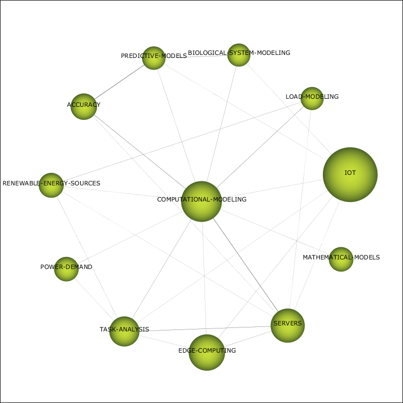
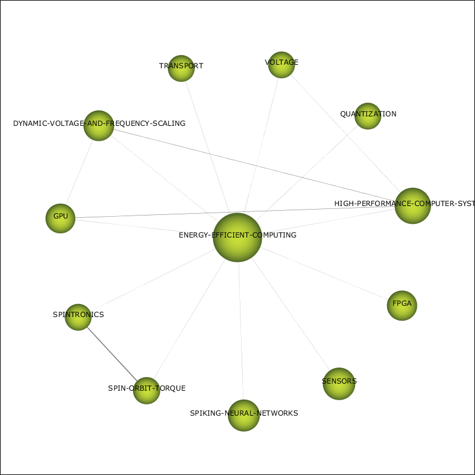
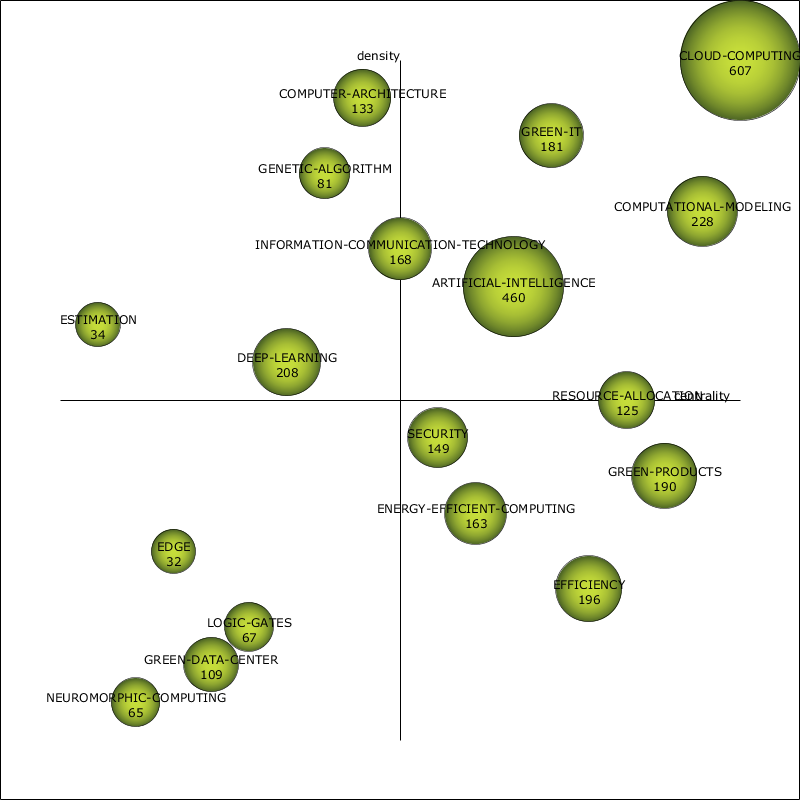
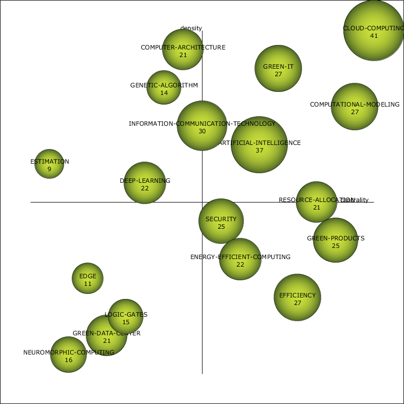
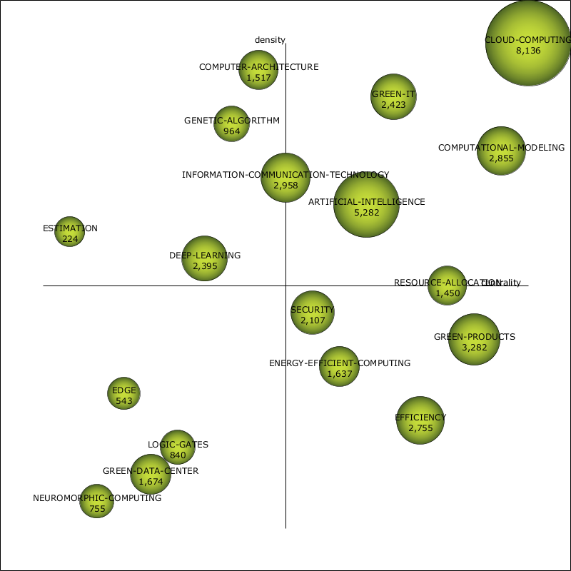

| Performance measure | Strategic diagram |
| unionDocuments-documentsCount |  |
| unionDocuments-hIndex |  |
| unionDocuments-sumCitations |  |
| Name | Centrality | Centrality range | Density | Density range |
| CLOUD-COMPUTING | 75.6 | 1 | 18.68 | 1 |
| GREEN-IT | 23.35 | 0.72 | 8.29 | 0.89 |
| COMPUTATIONAL-MODELING | 39.69 | 0.94 | 7.49 | 0.78 |
| ARTIFICIAL-INTELLIGENCE | 21.24 | 0.67 | 6.28 | 0.67 |
| GREEN-PRODUCTS | 31.22 | 0.89 | 3.79 | 0.39 |
| COMPUTER-ARCHITECTURE | 14.62 | 0.44 | 13.21 | 0.94 |
| INFORMATION-COMMUNICATION-TECHNOLOGY | 14.94 | 0.5 | 6.4 | 0.72 |
| RESOURCE-ALLOCATION | 25.62 | 0.83 | 4.51 | 0.5 |
| ENERGY-EFFICIENT-COMPUTING | 17.91 | 0.61 | 3.56 | 0.33 |
| EFFICIENCY | 23.37 | 0.78 | 2.19 | 0.22 |
| DEEP-LEARNING | 12.06 | 0.33 | 5.53 | 0.56 |
| SECURITY | 15.56 | 0.56 | 4.12 | 0.44 |
| GREEN-DATA-CENTER | 9.91 | 0.22 | 1.84 | 0.11 |
| GENETIC-ALGORITHM | 14.29 | 0.39 | 8.12 | 0.83 |
| LOGIC-GATES | 9.94 | 0.28 | 1.96 | 0.17 |
| NEUROMORPHIC-COMPUTING | 7.34 | 0.11 | 1.76 | 0.06 |
| EDGE | 9.35 | 0.17 | 3.53 | 0.28 |
| ESTIMATION | 5.73 | 0.06 | 6.2 | 0.61 |
| Name | unionDocumentsdocumentsCount | unionDocumentshIndex | unionDocumentssumCitations |
| CLOUD-COMPUTING | 607 | 41 | 8,136 |
| GREEN-IT | 181 | 27 | 2,423 |
| COMPUTATIONAL-MODELING | 228 | 27 | 2,855 |
| ARTIFICIAL-INTELLIGENCE | 460 | 37 | 5,282 |
| GREEN-PRODUCTS | 190 | 25 | 3,282 |
| COMPUTER-ARCHITECTURE | 133 | 21 | 1,517 |
| INFORMATION-COMMUNICATION-TECHNOLOGY | 168 | 30 | 2,958 |
| RESOURCE-ALLOCATION | 125 | 21 | 1,450 |
| ENERGY-EFFICIENT-COMPUTING | 163 | 22 | 1,637 |
| EFFICIENCY | 196 | 27 | 2,755 |
| DEEP-LEARNING | 208 | 22 | 2,395 |
| SECURITY | 149 | 25 | 2,107 |
| GREEN-DATA-CENTER | 109 | 21 | 1,674 |
| GENETIC-ALGORITHM | 81 | 14 | 964 |
| LOGIC-GATES | 67 | 15 | 840 |
| NEUROMORPHIC-COMPUTING | 65 | 16 | 755 |
| EDGE | 32 | 11 | 543 |
| ESTIMATION | 34 | 9 | 224 |
| Name | Cluster's network |
| CLOUD-COMPUTING | |
| GREEN-IT | |
| COMPUTATIONAL-MODELING |  |
| ARTIFICIAL-INTELLIGENCE | |
| GREEN-PRODUCTS | |
| COMPUTER-ARCHITECTURE | |
| INFORMATION-COMMUNICATION-TECHNOLOGY | |
| RESOURCE-ALLOCATION | |
| ENERGY-EFFICIENT-COMPUTING |  |
| EFFICIENCY | |
| DEEP-LEARNING | |
| SECURITY | |
| GREEN-DATA-CENTER | |
| GENETIC-ALGORITHM | |
| LOGIC-GATES | |
| NEUROMORPHIC-COMPUTING | |
| EDGE | |
| ESTIMATION | |